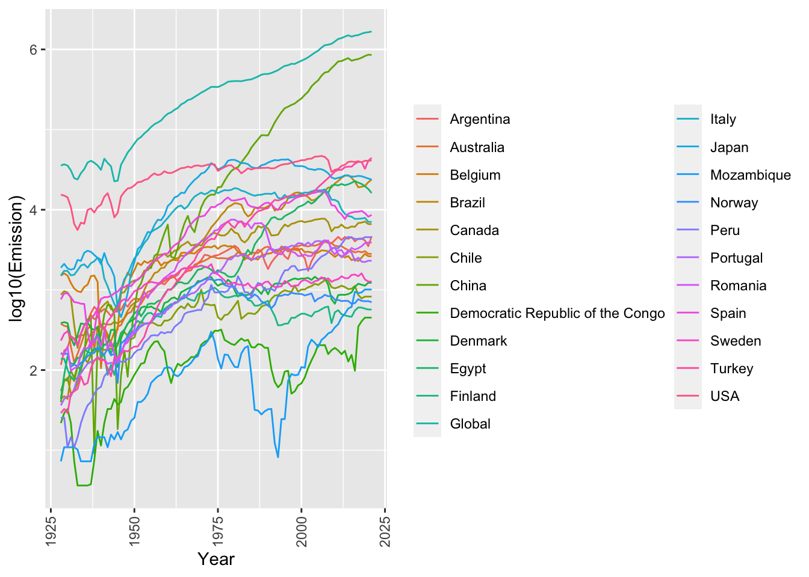

suppressMessages(library(DT))
suppressMessages(library(tidyverse))
suppressMessages(library(kableExtra))Non-parametric hypothesis tests with examples in R
How To
Non-parametric Tests
Wilcoxon Test
Mann Whitney U Test
Kruskal-Wallis Test
A tutorial on non-parametric hypothesis tests with examples in R.
Rohit Farmer ![]()
Update history
2022-11-21 Code on Kaggle
2022-11-18 First draft
Introduction
A hypothesis test is a statistical test used to determine whether there is enough evidence to support a hypothesis. For example, there is a difference between the average height of males and females. Non-parametric hypothesis tests are tests that do not rely on the assumptions of normality or equal variance. They are traditional alternatives to parametric tests because they make few or no assumptions about the distribution of the data or population. Non-parametric tests are often based on ranks given to the original numerical data. Usually non-parametric tests are regarded as relatively easy to perform but some problems can occur. It can be cumbersome to carry out such tests when working with large amounts of data. In many field of study such as psychology, the data have quite restricted ranges of scores, which can result in the same value appearing several times in a set of data. Tests based on rank can become more complicated with increased tied scores. Though, non-parametric tests have fewer assumptions they are not as powerful as parametric tests.
The different types of non-parametric hypothesis tests are:
- the Wilcoxon rank-sum (Mann-Whitney U test) (Section 2),
- the Wilcoxon signed-rank test (Section 3), and
- the Kruskal-Wallis test (Section 4).
Note
If you are primarily interested in code examples, please follow the navigation on the right; alternatively, you can test live code on Kaggle.
Besides deciding which hypothesis test to use to answer the question at hand, we also need to decide a couple of other parameters, for example, whether the test would be one sample or two samples, paired or un-paired, and one or two-tailed. I have discussed those parameters in detail here.
Dataset
For our example exercises, we will work with the “Global CO2 emissions from cement production” dataset (Andrew 2022). I have subsetted the data from 1928 onward and dropped any columns with all NAs or zeros. The table below shows all the data we will use in this tutorial.
Figure 1 shows per country yearly (x-axis) emissions logged to base 10 (y-axis). The log is taken for visualization purposes. All the statistical calculations will be done on the original values.
Note
The emissions from the use of fossil fuels in cement production are not included in this dataset since they are usually included elsewhere in global datasets of fossil CO2 emissions. The process emissions in this dataset, which result from the decomposition of carbonates in the production of cement clinker, amounted to ~1.7 Gt CO2 in 2021, while emissions from the combustion of fossil fuels to produce the heat required amounted to an additional ~1.0 Gt CO2 in 2021.
# Download the data from Zenodo
dat <- readr::read_csv("https://zenodo.org/record/7081360/files/1.%20Cement_emissions_data.csv", show_col_types = FALSE)
# Filter the data and present it in a DT::datatable
dat <- dat %>% dplyr::filter(Year >= 1928) %>%
select_if(function(x) all(!is.na(x))) %>%
select_if(function(x) all(!x == 0))
DT::datatable(dat)dat_gather <- dat %>% gather(key = "Country", value = "Emission", -Year)
ggplot(dat_gather, aes(x = Year, y = as.numeric(log10(Emission)), color = Country)) +
geom_line(aes(group = Country)) +
labs(x = "Year", y = "log10(Emission)", color = "") +theme(axis.text.x = element_text(angle = 90, vjust = 0.5, hjust=1))
Wilcoxon rank-sum (Mann-Whitney U test)
The Wilcoxon rank-sum or Mann-Whitney U test is perhaps the most common non-parametric test for unrelated samples. You would use it when the two groups are independent of each other, for example in our dataset testing differences in CO2 emissions between two different countries (e.g. USA vs. Canada). It can be used even when the two groups are of different sizes.
The method
- First, we rank all of the values (from both groups) from the smallest to largest. Equal values are allocated the average of the ranks they would have if there was tiny differences between them.
- Next we sum the ranks for each group. You call the sum of the ranks for the larger group \(R_1\) and for the smaller sized group, \(R_2\). If both groups are equally sized then we can label them whichever way round we like.
- We then input \(R_1\) and \(R_2\) and also \(N_1\) and \(N_2\), the respective sizes of each group, into the Equation 1.
\[ \begin{equation} U = (N_1 \times N_2) + \dfrac{N_1 \times (N_1+1)}{2} - R_1 \end{equation} \tag{1}\]
- Then we compare the value of \(U\) to significance tables. You find the intersection of the column with the value of \(N_1\) and the row with the value of \(N_2\). In this intersection there will be two ranges of values of \(U\) which are significant at the \(5\%\) level. If our value is within one of these ranges, then we have a significant result and we reject the null hypothesis. If our value is not in the range then it is not significant and then the independent variable is unrelated to the dependent variable, we accept the \(H_0\).
- As a check, we also need to examine the means of the two groups, to see which has the higher scores on the dependent variable.
Example code for a two-tailed test in R
In this example we will do a two-tailed test to measure if there is a difference in emission between the USA and Canada. Our null hypothesis \(H_0\) is that there is no difference.
(w_res <- wilcox.test(dat$USA, dat$Canada, conf.int = TRUE))
Wilcoxon rank sum test with continuity correction
data: dat$USA and dat$Canada
W = 8763, p-value < 2.2e-16
alternative hypothesis: true location shift is not equal to 0
95 percent confidence interval:
26384 29797
sample estimates:
difference in location
28155.27 We can fetch results from w_res object like w_res$p.value. However, it’s easier to fetch all the values and convert them into a data frame using the boom::tidy() function from the tidyverse suite. As we see in Table 1 the p-value is \(0\), which means we can reject our null hypothesis and accept our alternative hypothesis that there is a significant difference in CO2 emissions between the USA and Canada.
broom::tidy(w_res) %>%
kbl() %>%
kable_paper("hover", full_width = F)| estimate | statistic | p.value | conf.low | conf.high | method | alternative |
|---|---|---|---|---|---|---|
| 28155.27 | 8763 | 0 | 26384 | 29797 | Wilcoxon rank sum test with continuity correction | two.sided |
Example code for a one-tailed test in R
In this example we will do a one-tailed test to measure if emissions from the USA is greater than Canada. Our null hypothesis \(H_0\) is that the emissions from the USA is not greater than Canada.
(w_res <- wilcox.test(dat$USA, dat$Canada, conf.int = TRUE, alternative = "greater"))
Wilcoxon rank sum test with continuity correction
data: dat$USA and dat$Canada
W = 8763, p-value < 2.2e-16
alternative hypothesis: true location shift is greater than 0
95 percent confidence interval:
26696 Inf
sample estimates:
difference in location
28155.27 As we see in Table 2 the p-value is \(0\), which means we can reject our null hypothesis and accept our alternative hypothesis that the CO2 emissions are in the USA than Canada.
broom::tidy(w_res) %>%
kbl() %>%
kable_paper("hover", full_width = F)| estimate | statistic | p.value | conf.low | conf.high | method | alternative |
|---|---|---|---|---|---|---|
| 28155.27 | 8763 | 0 | 26696 | Inf | Wilcoxon rank sum test with continuity correction | greater |
Wilcoxon signed-rank test
The Wilcoxon signed ranks test also known as the Wilcoxon matched pairs test, is similar to the sign test. The only alteration is that we rank the differences ignoring their signs (but we do keep a note of them). As the name implies, we use the Wilcoxon matched pairs test on related data, so each sample or group will be equal in size.
The method
- Calculate the difference values between your two samples of data. We then remove difference values of zero.
- Rank them. If values are tied then you use the same method as in the Mann-Whitney tests. You assign the difference scores the average rank if it was possible to separate the tied difference scores.
- The ranks of the differences can now have the sign of the difference reattached.
- The sum of the positive ranks are calculated.
- The sum of the negative ranks are calculated.
- You then choose the smaller sum of ranks and we call this our \(T\) value, which we compare with significance tables. You choose the row which has the number of pairs of values in your sample.
- Report your findings and make your conclusion.
Example code for a paired two-tailed test in R
Since this a paired test we will test if there is difference in emission between two time periods say 2000 and 2020 across all the countries in our dataset. Our null hypothesis \(H_0\) is that there is no difference.
dat_m <- dat %>% dplyr::select(-Year) %>% as.matrix()
rownames(dat_m) <- dat$Year
dat_t <- t(dat_m)
x <- as.numeric(dat_t[,"2000"])
y <- as.numeric(dat_t[,"2020"])
(w_res <- wilcox.test(x, y, conf.int = TRUE, paired = TRUE))
Wilcoxon signed rank exact test
data: x and y
V = 119, p-value = 0.5803
alternative hypothesis: true location shift is not equal to 0
95 percent confidence interval:
-3848.5 621.5
sample estimates:
(pseudo)median
-297 As we can see in the Table 3, the p.value is 0.5, which is above our alpha level of 0.05; therefore, we can accept our null hypothesis that there is indeed no significant difference in CO2 emissions between 2000 and 2020.
broom::tidy(w_res) %>%
kbl() %>%
kable_paper("hover", full_width = F)| estimate | statistic | p.value | conf.low | conf.high | method | alternative |
|---|---|---|---|---|---|---|
| -297 | 119 | 0.580338 | -3848.5 | 621.5 | Wilcoxon signed rank exact test | two.sided |
Kruskal-Wallis test
Kruskal-Wallis test by rank (Kruskal–Wallis H test) is a non-parametric alternative to one-way ANOVA test, which extends the two-samples Wilcoxon test in the situation where there are more than two groups. It’s recommended when the assumptions of one-way ANOVA test are not met.
A significant Kruskal–Wallis test indicates that at least one sample stochastically dominates one other sample. The test does not identify where this stochastic dominance occurs or for how many pairs of groups stochastic dominance obtains.
Since it is a nonparametric method, the Kruskal–Wallis test does not assume a normal distribution of the residuals, unlike the analogous one-way analysis of variance. If the researcher can make the assumptions of an identically shaped and scaled distribution for all groups, except for any difference in medians, then the null hypothesis is that the medians of all groups are equal, and the alternative hypothesis is that at least one population median of one group is different from the population median of at least one other group. Otherwise, it is impossible to say, whether the rejection of the null hypothesis comes from the shift in locations or group dispersions.
The method
Rank all data from all groups together; i.e., rank the data from 1 to \(N\) ignoring group membership. Assign any tied values the average of the ranks they would have received had they not been tied.
The test statistic is given by Equation 2.
\[ H = \frac{12}{N(N+1)} \sum_{i=1}^{k} \frac{R_i^2}{n_i}-3(N+1) \tag{2}\]
Where \(N\) is the total sample size, \(k\) is the number of groups we are comparing, \(R_i\) is the sum of ranks for group \(i\), and \(n_i\) is the sample size of group \(i\).
The decision to reject or not the null hypothesis is made by comparing \(H\) to a critical value \(H_c\) obtained from a table or a software for a given significance or alpha level. If \(H\) is bigger than \(H_c\), the null hypothesis is rejected.
If the statistic is not significant, then there is no evidence of stochastic dominance between the samples. However, if the test is significant then at least one sample stochastically dominates another sample.
Example code in R
We will use the same long form of data that we used in the Figure 1.
(k_res <- kruskal.test(dat_gather$Emission, as.factor(dat_gather$Country)))
Kruskal-Wallis rank sum test
data: dat_gather$Emission and as.factor(dat_gather$Country)
Kruskal-Wallis chi-squared = 1253.6, df = 22, p-value < 2.2e-16broom::tidy(k_res) %>%
kbl() %>%
kable_paper("hover", full_width = F)| statistic | p.value | parameter | method |
|---|---|---|---|
| 1253.576 | 0 | 22 | Kruskal-Wallis rank sum test |
References
Andrew, Robbie. 2022. “Global CO2 Emissions from Cement Production.” Zenodo. https://doi.org/10.5281/ZENODO.7081360.
Website(s)
Citation
BibTeX citation:
@online{farmer2022,
author = {Farmer, Rohit},
title = {Non-Parametric Hypothesis Tests with Examples in {R}},
date = {2022-11-18},
url = {https://dataalltheway.com/posts/011-non-parametric-hypothesis-tests-r},
langid = {en}
}
For attribution, please cite this work as:
Farmer, Rohit. 2022. “Non-Parametric Hypothesis Tests with
Examples in R.” November 18, 2022. https://dataalltheway.com/posts/011-non-parametric-hypothesis-tests-r.